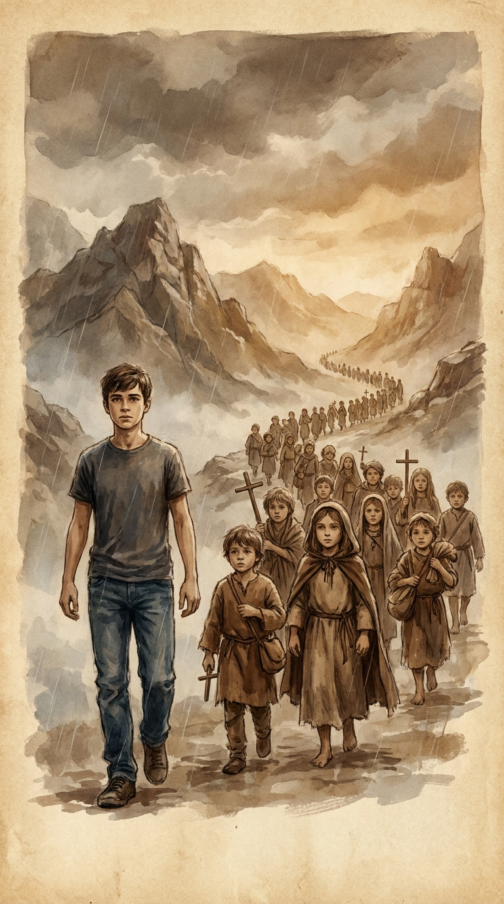

Volgens mij wil Thea Beckman zeggen dat je niet zomaar alles moet geloven wat iemand zegt, ook niet als die persoon de baas is. De kinderen in het boek doen gewoon wat de monniken zeggen, en dat is gevaarlijk.
Dolf denkt wél zelf na. Hij weet meer dan de anderen en gebruikt dat om hen te helpen. Dat vind ik de belangrijkste les van het boek.
Ik vond Kruistocht in spijkerbroek een spannend boek. Het begin is wat rustig, maar zodra de tocht begint, wil je weten hoe het verder gaat.
Dolf vond ik het leukste personage. Hij is gewoon een jongen zoals wij, maar hij durft wel de leiding te nemen als het moet. Dom Anselmus vond ik de hele tijd verdacht. Je voelt meteen dat er iets niet klopt met hem.
Wat ik minder vond: soms staan er heel veel beschrijvingen in, en dan gaat het verhaal wat trager.
Ik vond het ook straf dat de Kinderkruistocht echt gebeurd is. Kinderen die honderden kilometers lopen, door de bergen, in de regen… Dat kan je je bijna niet voorstellen.
Aanrader voor iedereen die van avontuur en geschiedenis houdt!
4 op 5

Kruistocht in spijkerbroek is een historische jeugdroman van de Nederlandse schrijfster Thea Beckman. Het boek verscheen in 1973 en won in 1974 de Gouden Griffel, een belangrijke prijs voor jeugdboeken.
Het verhaal speelt zich af in het jaar 1212, tijdens de Kinderkruistocht. Die heeft echt bestaan! Duizenden kinderen trokken toen te voet van Keulen over de Alpen naar Genua. Het is dus een avonturenverhaal, een geschiedenisboek en een tijdreisverhaal in één.
Dit is het lievelingsboek van mijn moemoe. Ze heeft me er vaak over verteld: over het tijdreizen en over de middeleeuwen. Dat leek me wel wat, en ik was benieuwd waarom zij het zo goed vond.
Ik dacht dat het een grappig avontuur zou worden over een jongen in jeans tussen de ridders. Maar het boek is veel spannender en ook serieuzer dan ik dacht. Het gaat vooral over overleven en over de vraag wie je kunt vertrouwen.
Dolf Wega is een gewone jongen uit Amstelveen. Hij meldt zich als vrijwilliger voor een experiment met een tijdmachine. Zijn plan is eenvoudig: even terug in de tijd om een riddertoernooi in het Franse Montgivray te bekijken, en daarna weer naar huis. Maar er gaat iets mis. Door een rekenfout belandt Dolf in het jaar 1212.
Daar komt hij terecht tussen duizenden kinderen die vanuit Keulen op weg zijn naar Jeruzalem. Hun leider is Nicolaas, een herdersjongen in het wit. De kinderen geloven dat God hen geroepen heeft. Als ze in Genua aankomen, zal de zee voor hen openspliten, zodat ze zo naar het Heilige Land kunnen lopen.
Dolf weet dat dat niet zal gebeuren. De kinderen hebben weinig eten, slapen buiten en worden ziek. Daarom gebruikt hij wat hij uit zijn eigen tijd weet. Hij verdeelt het eten eerlijk, maakt groepen en zorgt dat de kinderen rusten. Zo wordt hij stilaan de echte leider. Hij maakt ook vrienden, zoals Frank, de sterke Bertho, Carolus en het kleine meisje Mariecke.
Niet iedereen is blij met de slimme vreemdeling. De magere monnik Dom Anselmus vertrouwt Dolf niet. Anselmus wil zo snel mogelijk naar Genua, terwijl Dolf de kinderen wil laten rusten. Tijdens de zware tocht door de Alpen begint Dolf zich af te vragen wat de monniken echt van plan zijn. Kan hij de kinderen beschermen? En komt hij ooit nog terug naar zijn eigen tijd?